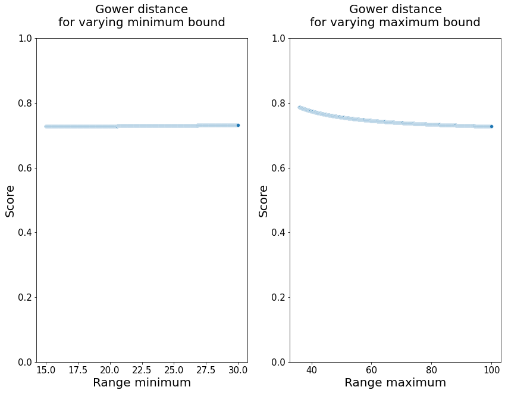
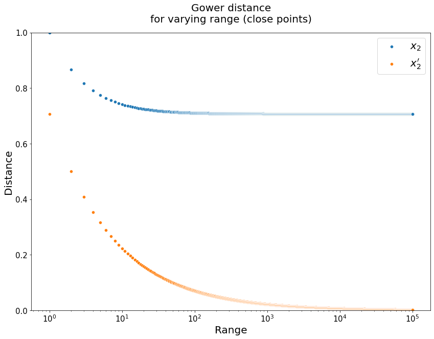
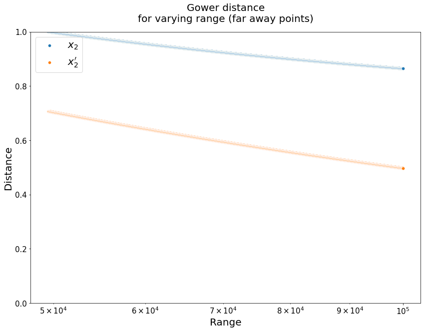

Gower distance
For features \(x_i=\{x_{i1},\dots,x_{ip}\}\) and \(x_j=\{x_{j1},\dots,x_{jp}\}\), the Gower similarity matrix 1 can be defined as
\[ S_{\text{Gower}}(x_i, x_j) = \frac{\sum_{k=1}^p s_{ijk}\delta_{ijk}}{\sum_{k=1}^p \delta_{ijk}}. \]For each feature \(k=1,\dots,p\) a score \(s_{ijk}\) is calculated. A quantity \(\delta_{ijk}\) is also calculated having possible values \(\{0,1\}\) depending on whether the variables \(x_i\) and \(x_j\) can be compared or not (e.g. if they have different types).
A special case2 for when no missing values exist can be formulated as the mean of the Gower similarity scores, that is:
\[ S_{\text{Gower}}(x_i, x_j) = \frac{\sum_{k=1}^p s_{ijk}}{p}. \]The score \(s_{ijk}\) calculation will depend on the type of variable and below we will see some examples.
This similarity score will take values between \(0 \leq s_{ijk} \leq 1\) with \(0\) representing maximum similarity and \(1\) no similarity.
Scoring
Numerical variables
For numerical variables the score can be calculated as
\[ s_{ijk} = 1 - \frac{|x_{ik}-x_{jk}|}{R_k}. \]This is simply a Manhattan distance distance between the two values normalised by a quantity \(R_k\). The quantity \(R_k\) refers to the range of feature (population or sample).
Categorical variables
For categorical variables we will use following score:
\[ s_{ijk} = 1\{x_{ik}=x_{jk}\} \]This score will be \(1\) if the categories are the same and \(0\) if they are not.
In reality the score \(S_{\text{Gower}}(x_i, x_j)\) will be a similarity score taking values between \(1\) (for equal points) and \(0\) for extremely dissimilar points. In order to turn this value into a distance metric we can convert it using (for instance)
\[ d_{\text{Gower}} = \sqrt{1-S_{\text{Gower}}}. \]This will take values of \(1\) for the furthest points and \(0\) for the same points.
Example
Here we will use the special case when no missing values exist. A test dataset can be:
import pandas as pd
df = pd.DataFrame({
"Sex1": ['M', 'M', 'F', 'F', 'F', 'M', 'M', 'F', 'F', 'F'],
"Sex2": ['M', 'M', 'F', 'F', 'F', 'F', 'F', 'M', 'M', 'M'],
"Age1": [15, 15, 15, 15, 15, 15, 15, 15, 15, 15],
"Age2": [15, 36, 58, 78, 100, 15, 36, 58, 78, 100]
})
df
| Sex1 | Sex2 | Age1 | Age2 | |
|---|---|---|---|---|
| 0 | M | M | 15 | 15 |
| 1 | M | M | 15 | 36 |
| 2 | F | F | 15 | 58 |
| 3 | F | F | 15 | 78 |
| 4 | F | F | 15 | 100 |
| 5 | M | F | 15 | 15 |
| 6 | M | F | 15 | 36 |
| 7 | F | M | 15 | 58 |
| 8 | F | M | 15 | 78 |
| 9 | F | M | 15 | 100 |
For the numerical variable (age) we can define the range as \(R_{\text{age}}=\left(\max{\text{age}}-\min{\text{age}}\right)\).
age_min = df["Age1", "Age2"](/"age1",-"age2".html).min().min()
age_max = df["Age1", "Age2"](/"age1",-"age2".html).max().max()
R_age = age_max - age_min
print(f"R_age = {R_age}")
R_age = 85
We can now calculate the score for each numerical field
def s_numeric(x1, x2, R):
return 1 - abs(x1-x2)/R
df['s_age'] = df.apply(lambda x: s_numeric(x['Age1'], x['Age2'], R_age), axis=1)
df
| Sex1 | Sex2 | Age1 | Age2 | s_age | |
|---|---|---|---|---|---|
| 0 | M | M | 15 | 15 | 1.000000 |
| 1 | M | M | 15 | 36 | 0.752941 |
| 2 | F | F | 15 | 58 | 0.494118 |
| 3 | F | F | 15 | 78 | 0.258824 |
| 4 | F | F | 15 | 100 | 0.000000 |
| 5 | M | F | 15 | 15 | 1.000000 |
| 6 | M | F | 15 | 36 | 0.752941 |
| 7 | F | M | 15 | 58 | 0.494118 |
| 8 | F | M | 15 | 78 | 0.258824 |
| 9 | F | M | 15 | 100 | 0.000000 |
For categorical variables we can define the following score function:
def s_categorical(x1, x2):
return 1 if x1==x2 else 0
df['s_sex'] = df.apply(lambda x: s_categorical(x['Sex1'], x['Sex2']), axis=1)
df
| Sex1 | Sex2 | Age1 | Age2 | s_age | s_sex | |
|---|---|---|---|---|---|---|
| 0 | M | M | 15 | 15 | 1.000000 | 1 |
| 1 | M | M | 15 | 36 | 0.752941 | 1 |
| 2 | F | F | 15 | 58 | 0.494118 | 1 |
| 3 | F | F | 15 | 78 | 0.258824 | 1 |
| 4 | F | F | 15 | 100 | 0.000000 | 1 |
| 5 | M | F | 15 | 15 | 1.000000 | 0 |
| 6 | M | F | 15 | 36 | 0.752941 | 0 |
| 7 | F | M | 15 | 58 | 0.494118 | 0 |
| 8 | F | M | 15 | 78 | 0.258824 | 0 |
| 9 | F | M | 15 | 100 | 0.000000 | 0 |
We can now calculate the final score using
import math
df['s'] = df.apply(lambda x: (x['s_age'] + x['s_sex'])/2.0, axis=1)
df['d'] = df.apply(lambda x: math.sqrt(1.0 - x['s']), axis=1)
df
| Sex1 | Sex2 | Age1 | Age2 | s_age | s_sex | s | d | |
|---|---|---|---|---|---|---|---|---|
| 0 | M | M | 15 | 15 | 1.000000 | 1 | 1.000000 | 0.000000 |
| 1 | M | M | 15 | 36 | 0.752941 | 1 | 0.876471 | 0.351468 |
| 2 | F | F | 15 | 58 | 0.494118 | 1 | 0.747059 | 0.502933 |
| 3 | F | F | 15 | 78 | 0.258824 | 1 | 0.629412 | 0.608760 |
| 4 | F | F | 15 | 100 | 0.000000 | 1 | 0.500000 | 0.707107 |
| 5 | M | F | 15 | 15 | 1.000000 | 0 | 0.500000 | 0.707107 |
| 6 | M | F | 15 | 36 | 0.752941 | 0 | 0.376471 | 0.789639 |
| 7 | F | M | 15 | 58 | 0.494118 | 0 | 0.247059 | 0.867722 |
| 8 | F | M | 15 | 78 | 0.258824 | 0 | 0.129412 | 0.933053 |
| 9 | F | M | 15 | 100 | 0.000000 | 0 | 0.000000 | 1.000000 |
Range impact
Varying bounds
Let's visualise how the choice of range can affect the scoring, if can set it arbitrarily. First let's pick two random points, \(x_1=(30, M)\) and \(x_2=(35, F)\).
We will vary the bounds from a \(15\leq x_{min}<30\) and \(35< x_{max} \leq 100\).
def score(x1, x2, R):
s_0 = 1-abs(x1[0]-x2[0])/R
s_1 = 1 if x1[1]==x2[1] else 0
return (s_0 + s_1)/2.0
def distance(s):
return math.sqrt(1.0-s)
import numpy as np
x1 = (30, 'M')
x2 = (35, 'F')
bmin = np.linspace(15, 30, num=1000)
bmax = np.linspace(36, 100, num=1000)
scores_min = [distance(score(x1, x2, 100-bm)) for bm in bmin]
scores_max = [distance(score(x1, x2, bm-15)) for bm in bmax]
import seaborn as sns
import matplotlib.pyplot as plt
from plotutils import *
fig, ax =plt.subplots(1,2)
sns.scatterplot(bmin, scores_min, ax=ax[0])
ax[0].set(xlabel="Range minimum", ylabel="Score",
title="Gower distance\nfor varying minimum bound")
ax[0].set(ylim=(0, 1))
sns.scatterplot(bmax, scores_max, ax=ax[1])
ax[1].set(xlabel="Range maximum", ylabel="Score",
title="Gower distance\nfor varying maximum bound")
ax[1].set(ylim=(0, 1))
plt.show()

Let's try with more separated points
x1 = (16, 'M')
x2 = (90, 'F')
bmin = np.linspace(15, 16, num=1000, endpoint=False)
bmax = np.linspace(91, 100, num=1000)
scores_min = [distance(score(x1, x2, 100-bm)) for bm in bmin]
scores_max = [distance(score(x1, x2, bm-16)) for bm in bmax]
fig, ax =plt.subplots(1,2)
sns.scatterplot(bmin, scores_min, ax=ax[0])
ax[0].set(xlabel="Range minimum", ylabel="Score",
title="Gower distance\nfor varying minimum bound")
ax[0].set(ylim=(0, 1))
sns.scatterplot(bmax, scores_max, ax=ax[1])
ax[1].set(xlabel="Range maximum", ylabel="Score",
title="Gower distance\nfor varying maximum bound")
ax[1].set(ylim=(0, 1))
plt.show()

Varying range directly
We will now try to see how the distance between two point comparisons (very close, very far) changes when varying the range directly. We will choose two sets of points, \(x_1=(1000, M), x_2=(1001, F)\) and \(x_1=(500, M), x_2=(50000, F)\). The range will vary between
\[ \max(x_1, x_2)-\min(x_1, x_2)<R<100000. \]We are also interested on the weight the categorical variable will have on the final distance with varying bounds, so we will also calculate them for an alternative \(x_2'=(1001, M)\) anf \(x_2'=(50000, M)\).
For the first set of points we will have:
x1 = (1000.0, 'M')
x2 = (1001.0, 'F')
MAX_RANGE = 100000
R = np.linspace(max(x1[0], x2[0])-min(x1[0], x2[0]), MAX_RANGE, num=100000)
distances_M = [distance(score(x1, x2, i)) for i in R]
distances_F = [distance(score(x1, (x2[0], 'M'), i)) for i in R]
ax = sns.scatterplot(R, distances_M, label="$x_2$")
sns.scatterplot(R, distances_F, label="$x_2'$")
ax.set(xlabel="Range", ylabel="Distance",
title="Gower distance\nfor varying range (close points)")
ax.set(ylim=(0, 1), xscale="log")
plt.show()

And for far away points we will have:
x1 = (500.0, 'M')
x2 = (50000.0, 'F')
MAX_RANGE = 100000
R = np.linspace(max(x1[0], x2[0])-min(x1[0], x2[0]), MAX_RANGE, num=100000)
distances_M = [distance(score(x1, x2, i)) for i in R]
distances_F = [distance(score(x1, (x2[0], 'M'), i)) for i in R]
ax = sns.scatterplot(R, distances_M, label="$x_2$")
sns.scatterplot(R, distances_F, label="$x_2'$")
ax.set(xlabel="Range", ylabel="Distance",
title="Gower distance\nfor varying range (far away points)")
ax.set(ylim=(0, 1), xscale="log")
plt.show()

-
Gower, John C. "A general coefficient of similarity and some of its properties." Biometrics (1971): 857-871. ↩
-
This is for instance the case we deal with in the Counterfactuals with Constraint Solvers. ↩